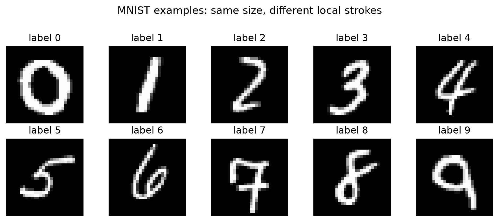
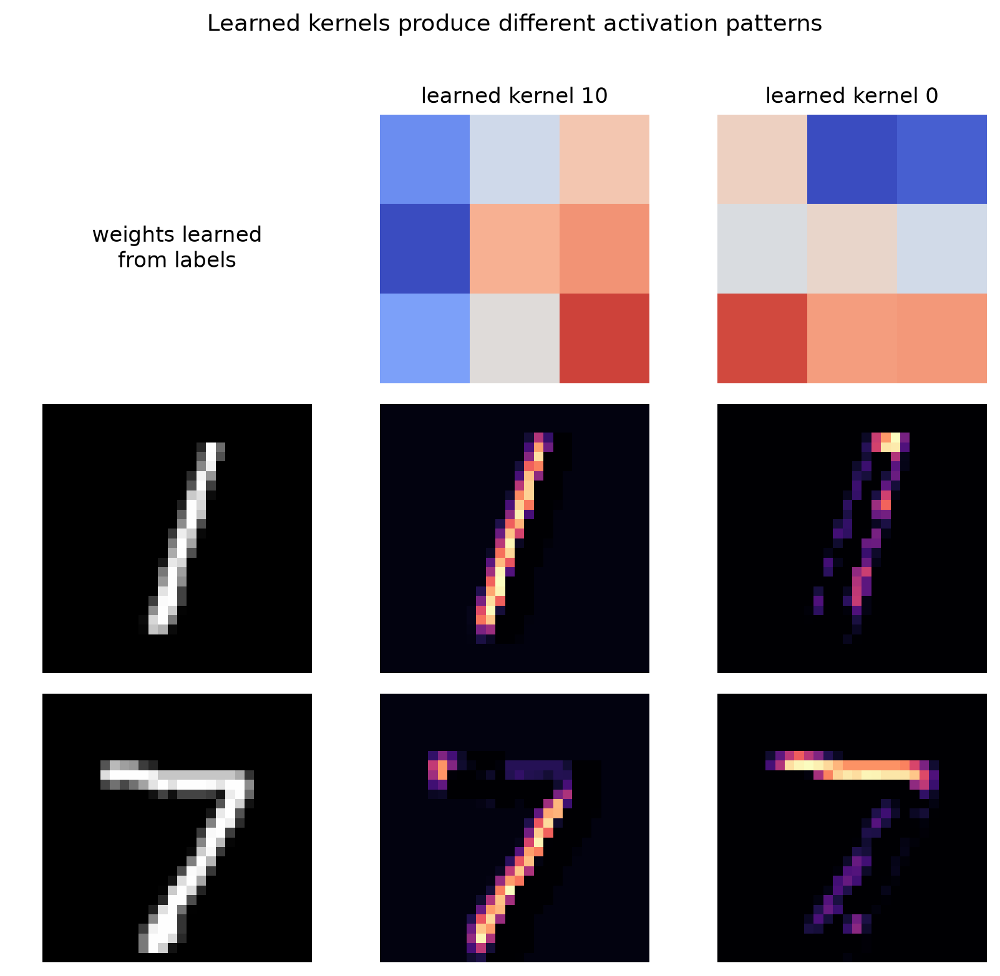

This practicum tells one continuous story. You will first solve MNIST with a multilayer perceptron (MLP), stop to make convolution visible, solve the same task with a convolutional neural network (CNN), and finally inspect how kernels activate on handwritten 1s and 7s.
Download the complete Jupyter notebook. It contains the runnable code and representative executed output. The web and print book retain a concise set of results so that the explanation remains readable without requiring TensorFlow during rendering.
To reproduce the authoring environment from the repository root:
The .venv directory is intentionally ignored by Git. A standard Google Colab runtime is an easier alternative when local TensorFlow installation is inconvenient.
Learning Question and Evidence Rules
What changes when a classifier preserves spatial neighborhoods and reuses local detectors before making a class prediction?
The comparison controls the data split, scaling, optimizer, batch size, early-stopping rule, and approximate parameter budget. The architecture is the main planned difference. The validation set guides stopping; the test set is evaluated only after each model is fixed.
By the end, you should be able to:
explain what flattening preserves and what it no longer makes explicit;
calculate and visualize a kernel response;
distinguish a kernel, a feature map, and a class prediction;
read training and validation loss as evidence about fit; and
make a cautious, evidence-based MLP-versus-CNN comparison.
NoteRepresentative results, not universal constants
The displayed results come from one seeded full-data run using TensorFlow 2.20 and Keras 3.15. Small numerical differences are normal across software and hardware. Your explanations should survive those differences.
Setup: One Dataset, Three Roles
MNIST contains \(60{,}000\) training images and \(10{,}000\) test images. We shuffle the original training data once, use \(54{,}000\) examples for fitting, and reserve \(6{,}000\) for validation. Each image is a \(28\times28\) grayscale array.

Figure 1: One example from each MNIST class. The task is simple enough to train quickly, but the handwriting contains varying strokes, slants, and loops.
Code
import timeimport numpy as npimport matplotlib.pyplot as pltimport kerasimport tensorflow as tffrom keras import layersSEED =42BATCH_SIZE =128MAX_EPOCHS =12keras.utils.set_random_seed(SEED)tf.config.experimental.enable_op_determinism()(x_train_raw, y_train_raw), (x_test_raw, y_test) = ( keras.datasets.mnist.load_data())# Reproduce the same 54,000/6,000 fit/validation split.order = np.random.default_rng(SEED).permutation(len(x_train_raw))x_train_raw, y_train_raw = x_train_raw[order], y_train_raw[order]x_fit_raw, x_val_raw = x_train_raw[:54000], x_train_raw[54000:]y_fit, y_val = y_train_raw[:54000], y_train_raw[54000:]def scale(images):return images.astype("float32") /255.0fig, axes = plt.subplots(2, 5, figsize=(8, 3.5))for digit, axis inenumerate(axes.flat): index = np.flatnonzero(y_fit == digit)[0] axis.imshow(x_fit_raw[index], cmap="gray") axis.set_title(f"label {digit}") axis.axis("off")plt.tight_layout()
Check before continuing. Which set may influence the stopping epoch? Why should neither the validation set nor test set be passed to model.fit as training examples?
Figure 2: A digit 7 represented as a two-dimensional image and as the same 784 values in row-major vector order.
Flattening neither deletes nor randomizes a pixel. It changes how the model is allowed to use the values: two neighboring pixels no longer share an explicit two-dimensional neighborhood, and the same stroke in a new location reaches different dense-layer weights.
Explain. If pixel \((10,10)\) and pixel \((10,11)\) are adjacent in the grid, where do they appear in the vector? Why can the MLP still learn from them, even though it does not reuse one local detector across locations?
Record the parameter count, stopping epoch, lowest validation loss, test loss, test accuracy, number of errors, and training time. Do not tune the MLP after looking at the CNN’s test results; that would make the comparison asymmetric.
Part II: Make Convolution Visible
One Transparent Operation
A kernel produces one number per local window: multiply matching entries, add the products, and then move the same weights to the next location. The function below implements valid two-dimensional cross-correlation for one channel:
Predict before running. What changes when stride=2? What padding keeps a \(28\times28\) image at the same spatial size with a \(3\times3\) kernel and stride one? Verify both answers with array shapes.
Kernels Produce Evidence, Not Labels
The next comparison uses three hand-designed \(3\times3\) kernels. After cross-correlation, ReLU sets negative responses to zero. Bright locations show where a local window agrees with a kernel.
Figure 3: A digit 1 and a digit 7 passed through vertical, horizontal, and diagonal hand-designed kernels. Bright regions mark strong positive responses.
The vertical and diagonal kernels respond to parts of both digits. The horizontal kernel responds strongly to the top bar of this 7, but it also finds short horizontal transitions in the 1. A single feature map is therefore not a class decision. A CNN learns several filters and combines their spatial patterns across layers.
Experiment. Change one kernel entry at a time. For each change, predict which region will brighten or darken, then test your prediction. Finally design a kernel for a falling diagonal. State why none of these kernels alone is a reliable digit classifier.
Pooling and Parameter Counting
Max pooling retains the largest activation in each window and learns no weights:
Before viewing the summary, calculate every output shape and parameter count. Where are most CNN parameters located? What useful transformation occurs before that large dense layer?
Figure 4: Test accuracy, error count, and parameter count for the matched MLP and CNN run.
The CNN reduced the test error count by \(119\), a relative reduction of about \(49\%\), despite having slightly fewer parameters. This observation is consistent with the value of locality and weight sharing for images. One run does not prove that CNNs always win: the result depends on the data, protocol, implementation, and task.
Code
fig, axes = plt.subplots(1, 3, figsize=(9, 3))names = ["MLP", "CNN"]colors = ["#6C8EBF", "#70AD47"]axes[0].bar(names, [100* results[n]["accuracy"] for n in names], color=colors)axes[0].set(title="test accuracy", ylabel="percent", ylim=(95, 100))axes[1].bar(names, [results[n]["errors"] for n in names], color=colors)axes[1].set(title="test errors", ylabel="count")axes[2].bar(names, [results[n]["parameters"] for n in names], color=colors)axes[2].set(title="parameters", ylabel="count")plt.tight_layout()
Inspecting individual errors keeps the aggregate comparison connected to the images. The following code shows five mistakes from each model:
Figure 5: Training and validation loss and accuracy for the MLP and CNN. Dashed lines mark the minimum validation loss restored by early stopping.
For both models, training loss keeps falling after validation loss has stopped improving. That widening gap is evidence of overfitting: the model continues to fit the training examples without improving performance on held-out data. Accuracy alone makes the turn harder to see; cross-entropy loss reacts to changes in confidence even when the predicted class stays the same.
Interpret. Identify the first epoch after the minimum validation loss for each model. Explain why early stopping restores the earlier weights rather than keeping the final epoch. Then distinguish the evidence (the curve) from the diagnosis (overfitting).
Part IV: Return to Kernels: Learned Activations for 1 and 7
The hand-designed kernels made the mechanism transparent. We now ask what the trained CNN learned. A small probe model returns the first convolutional layer’s output instead of the final softmax probabilities:
Normalization matters here because the chosen 7 contains more illuminated pixels than the chosen 1. Without it, a class could have greater mean activation in nearly every channel simply because it contains more ink.

Figure 6: Two learned first-layer kernels and their feature maps for a representative 1 and 7. The channels were selected by their average relative activation difference across all test examples of the two classes.
The bright regions show where each learned kernel produces a positive response. Kernel 10 has a larger relative share of activation for 1s across the test set; kernel 0 has a larger relative share for 7s. Neither is a literal digit detector. The complete prediction combines 16 first-layer maps, 32 second-layer maps, their spatial arrangement, and the dense classification head.
Final Investigation
Reproduce Figure 6 with a different 1 and 7. Which bright regions persist, and which change with handwriting style?
Select channels using only one example rather than class averages. Explain why the resulting interpretation is less reliable.
Compare a correctly classified 7 with a 7 misclassified by either model. Describe the pixels and feature maps separately from any causal claim.
Shift both digits two pixels to the right without wrapping. Does the feature map shift as expected? Does the final predicted probability remain constant?
Design a new box-based image like Jason’s proposed letter task. Predict which local edges or corners an early CNN layer would need before building the model.
What to Submit
Submit the completed notebook plus a short report containing:
your MLP/CNN comparison table;
one hand-worked kernel response and its matching code result;
annotated training/validation loss curves;
the 1-versus-7 hand-designed and learned activation comparisons;
three representative errors from each model; and
a 300-500 word conclusion answering the learning question.
Your conclusion must separate observation from explanation. “The CNN made 119 fewer errors in this run” is an observation. “Locality and weight sharing helped it exploit image structure” is a plausible explanation supported by the controlled design and activation evidence, not a universal theorem about every image problem.